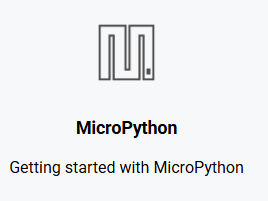

Enter BOOTSEL Mode
This step makes your computer recognize the Pico 2 W as a storage device.
- Hold the BOOTSEL button.
- Plug in the USB cable while holding it.
The RP2350 chip will now appear as a drive named RPI-RP2.
Open the Virtual Drive
Look for the RPI-RP2 drive in your file explorer. It contains a redirect file to get you to the right place.
- Open the RPI-RP2 drive window.
- Double-click index.html. This will automatically open the official documentation website in your browser.
index.html
HTML Document
Download MicroPython
Once the official website loads in your browser:
-
A Click the MicroPython tab.'">

[ Image: flashinguf2.png ]
Visual reference for MicroPython tab selection
.uf2 file to your Downloads folder.
Drag and Drop to Flash
Finally, program the board using the file in your Downloads folder:
-
Drag the
.uf2file from your downloads directly into the RPI-RP2 drive.
The drive will close automatically, and your Pico 2 W will start running MicroPython.
Configure Thonny IDE
To begin coding, you must connect the Thonny IDE to your Pico 2 W.
- 1 Launch Thonny IDE.
- 2 Navigate to Run > Configure interpreter...
- 3 Select MicroPython (Raspberry Pi Pico) from the dropdown list.
Troubleshooting Connection
If the device is not detected, safely unplug and reconnect the USB cable. Once re-established, return to the interpreter settings to select the active port.